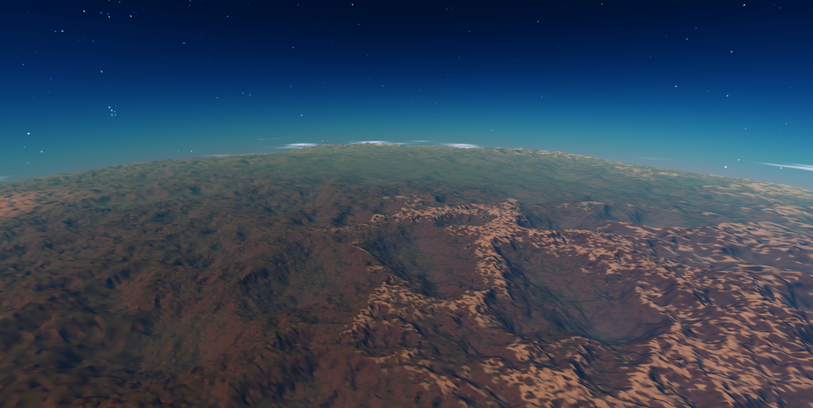
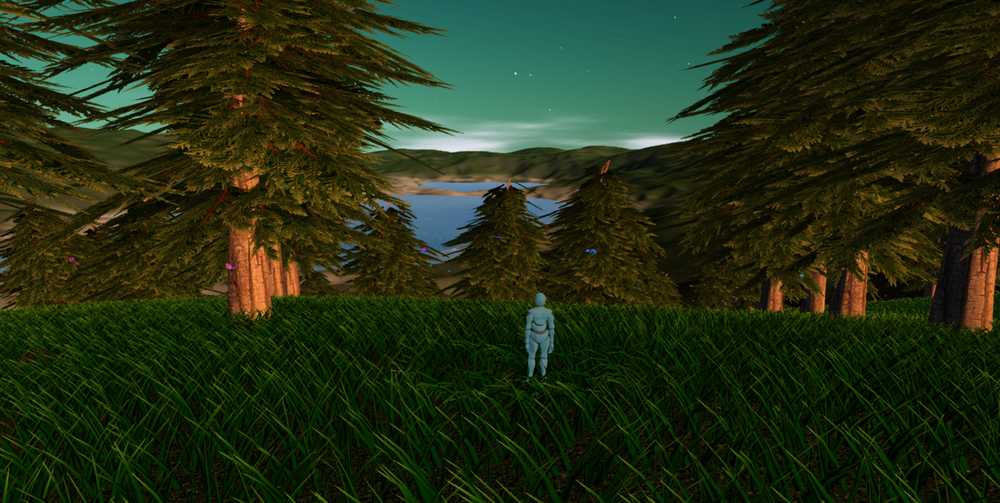

Cosmos Journeyer API Documentation - v1.10.4
Cosmos Journeyer


- What is Cosmos Journeyer?
- How to play
- Community and support
- My vision for the project
- Why Cosmos Journeyer?
- Contributing
- Sponsor
- Roadmap
- Features
- Development
- License
- Credits
- Special Thanks
What is Cosmos Journeyer?
Cosmos Journeyer is a space exploration game running directly in the browser! Take your spaceship and witness the beauty of this virtually infinite universe.
From stellar black holes and fully explorable planets down to single grass blades, to asteroid fields, your journey will be unforgettable.
How to play
Online
You can play freely from the main website of the project at cosmosjourneyer.com
Locally
You can also play locally! You can get an installer for your system by going to the latest release.
If you want the cutting edge version, follow these steps:
- Install prerequisites:
- Git (install with your package manager or from https://git-scm.com/downloads)
- Node.js (version 20 or higher)
- Pnpm (install with
npm install -g pnpm)
- Clone the repo with
git clone https://github.com/BarthPaleologue/CosmosJourneyer.git - Install the dependencies with
pnpm install - Build the project with
pnpm build - Serve the project with
pnpm serve:prod - Play at http://localhost:8080
To update your local version, either download the latest installer or run git pull in your local install.
Gameplay
Once Cosmos Journeyer has started, simply start a new game: tutorials will guide you through the basics of the game as you play.
You can pause the game at any time by pressing ESC and access the main menu to have a look at the keybindings, view the credits, and save your game.
The game has auto-saves, so you can quit at any time and resume your game later from where you left off.
Community and support
If you encounter any bugs or want to request features, please open an issue or send an email to barth.paleologue@cosmosjourneyer.com.
For general discussion and sharing screenshots, visit the official subreddit.
My vision for the project
For my detailed vision for the project, please refer to the VISION.md file.
Why Cosmos Journeyer?
Why make Cosmos Journeyer when games like Elite Dangerous, Star Citizen, No Man's Sky or Kerbal Space Program already exist?
There are many reasons of course but here are the main ones:
- Open Source: Other games such as Elite are dependent on their studios to keep them alive. When the game will no longer be profitable, they will stop supporting it and then the games will be dead forever (see Kerbal Space Program 2 debacle for a recent example). By going open-source, Cosmos Journeyer will be able to evolve and improve continuously, without the need for a studio. Anyone can pick it up and make it their own.
- Exploration Focused: I always felt that exploration was the most interesting part of space games. At the same time I feel the other games are too focused on combat, trading or multiplayer content. I want Cosmos Journeyer to be an exploration first game, where your main drive is to discover cool things, take pictures, and dream for a bit.
- Personal: I don't know it's just so exciting to create an entire universe from scratch. It really is a dream coming true for me.
Contributing
Contributions are welcome! There is too much to do for one person alone.
If you want to contribute, you will find guidelines and ideas here.
Thank you to all the people who have contributed to Cosmos Journeyer!
Sponsor
Help me make Cosmos Journeyer a reality! The development is time-consuming but generates no revenue by itself.
Sponsoring the project on Patreon or GitHub Sponsors will help secure the future of the project.
The project also has a ko-fi page at https://ko-fi.com/cosmosjourneyer if you feel like buying me a coffee!
Roadmap
You can have a look at the roadmap of the project on the website at https://cosmosjourneyer.com/
The deadlines are not set in stone and can be moved around as I am not working full time on the project.
Features
Explore telluric planet and moon surfaces from your spaceship or by foot.

Travel between worlds without any loading screens.

Planet surfaces are filled with procedural vegetation, rocks and butterflies to make them feel more alive.

Cosmos Journeyer generates a virtually infinite amount of star systems that all have a star, planets, and sometimes moons.

Development
Tech stack
Cosmos Journeyer is built using the following technologies:
- BabylonJS for the 3D engine
- TypeScript for the programming language
- Rspack for bundling the application
- Pnpm for the package manager
- Tauri for building the desktop application
- Playwright for end-to-end testing
- Prettier for code formatting
- Vitest for unit testing
- ESLint for linting
- Git LFS for versioning large files like screenshots
Setup
- Install Node.js (version 20 or higher)
- Install Pnpm globally with
npm install -g pnpm - Clone the repository with
git clone https://github.com/BarthPaleologue/CosmosJourneyer.git - Navigate to the project directory with
cd CosmosJourneyer - Install the dependencies with
pnpm install(this also sets up Git hooks for formatting changed files before commit. For pnpm 10 and later, hooks are installed because Husky is listed inonlyBuiltDependencies.)
Building
Web
To build the web version of Cosmos Journeyer, run pnpm build. Everything will be built in the dist folder.
To start the production server version, run pnpm serve:prod. The development version can be started with pnpm serve.
Tauri
Cosmos Journeyer can be built as a desktop application using Tauri.
To find what dependencies your OS is missing, run pnpm tauri info.
Then you can build the application with pnpm tauri build or run the dev version with pnpm tauri dev.
The build artifacts will appear in src-tauri/target/release/bundle/<platform>.
Testing
Cosmos Journeyer has unit tests and end-to-end tests.
You can run the unit tests with pnpm test:unit and the end-to-end tests with pnpm test:e2e:docker.
Formatting
Cosmos Journeyer uses Prettier for code formatting. Changed files are automatically formatted via a pre-commit hook. You can also format the entire project with pnpm format.
Linting
Cosmos Journeyer uses ESLint for linting. You can lint the code with pnpm lint.
Documentation
The documentation is online at https://barthpaleologue.github.io/CosmosJourneyer/doc/
Additionally, the ARCHITECTURE.md file contains a big picture explanation of the architecture of the project.
To build it locally, run pnpm doc and then pnpm serve:doc to serve it at localhost:8081.
License
Cosmos Journeyer is a free and open-source software licensed under the terms of the GNU AGPL License. Look at the LICENSE.md file for the full license text.
Credits
All credits can be found in the credits panel of the game.
Special Thanks
- Martin Molli for his fearless refactoring of the messy code base in its early days
- The people from BabylonJS for their amazing work on the BabylonJS framework and their help on the forum
- My family for their continuous support